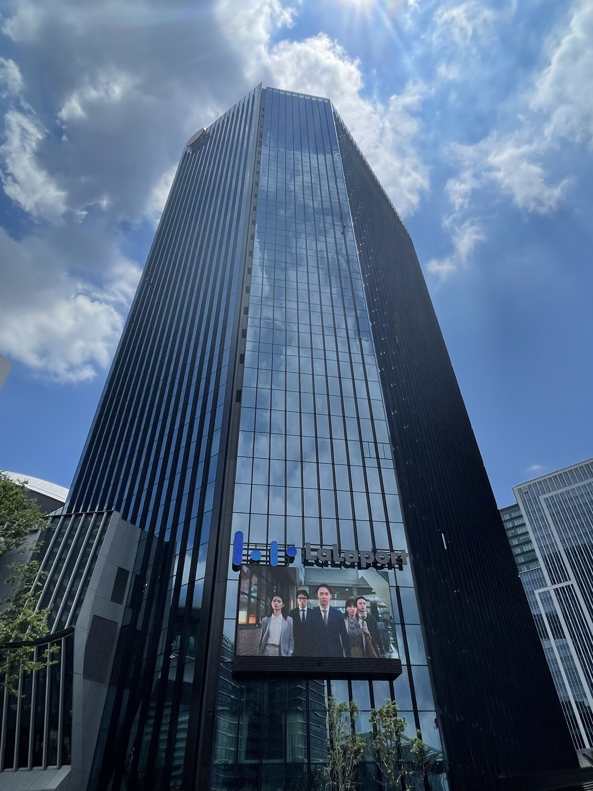
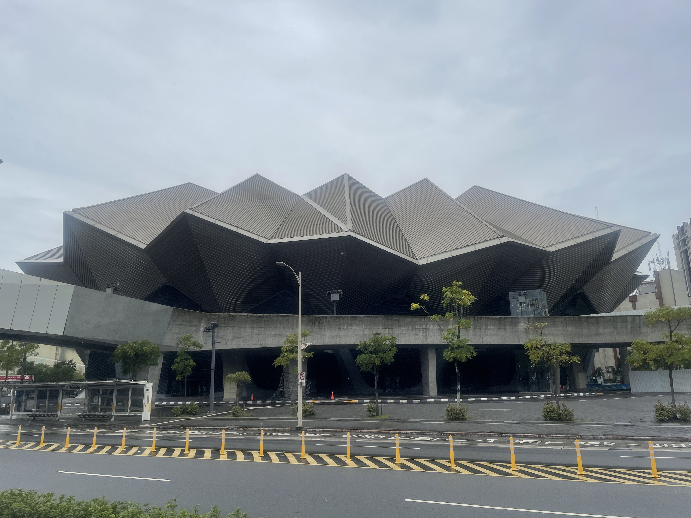
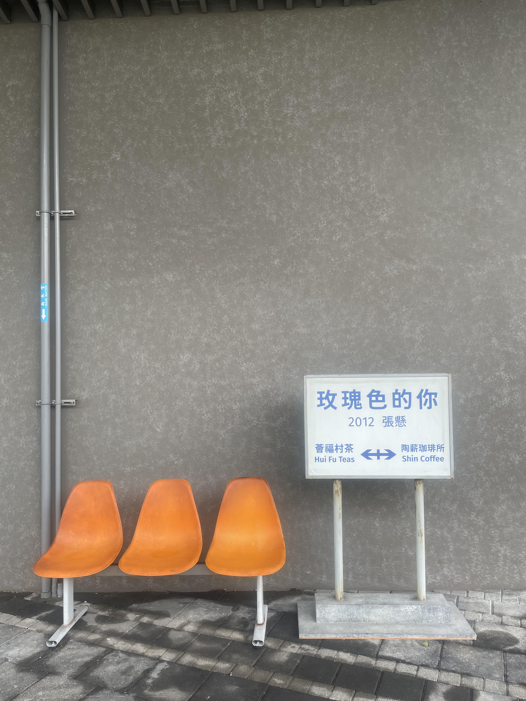
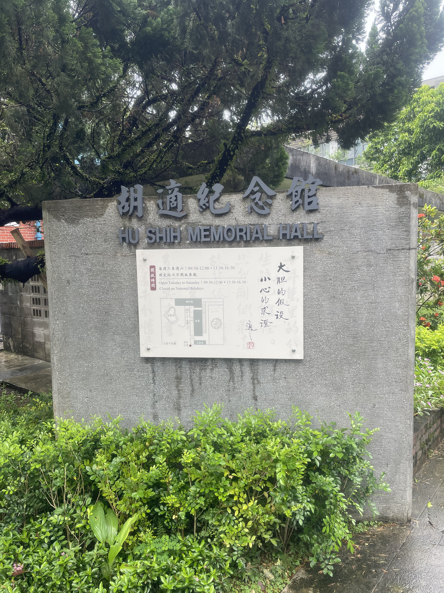
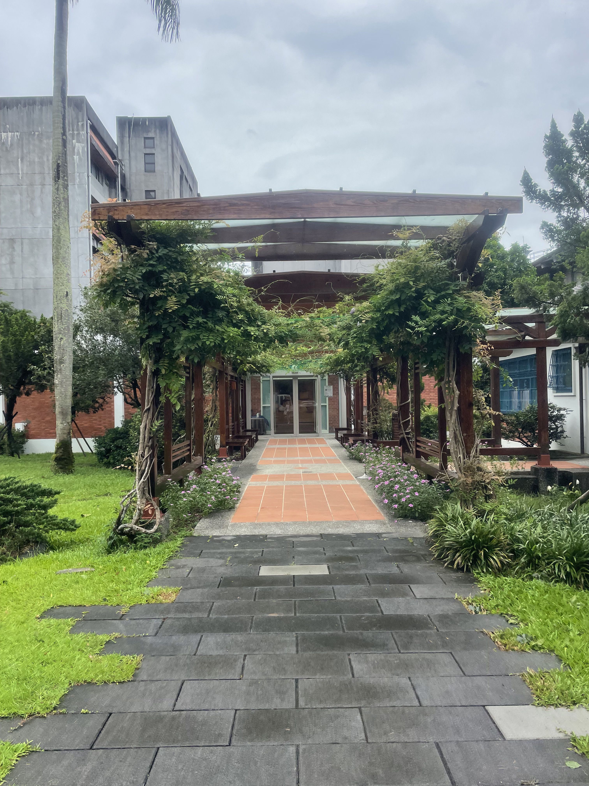
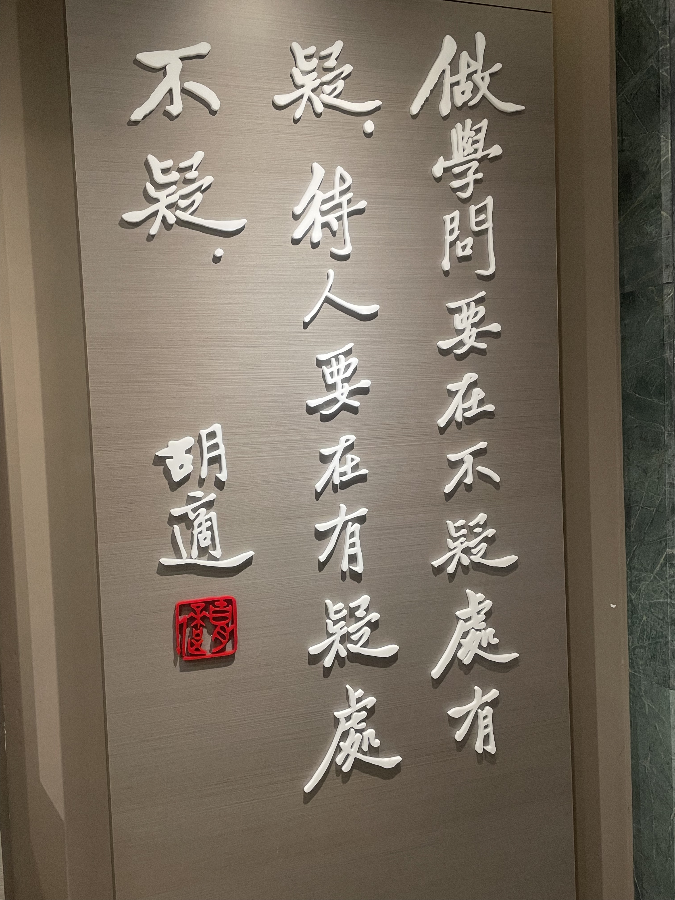
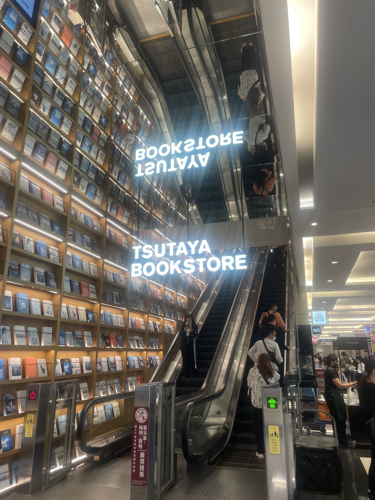

台北市南港區
基本資訊
位於台北市東側，是台北近年轉變最為明顯的行政區之一。早期以工業區與鐵路相關產業為主，隨著產業轉型與都市更新推動，南港逐漸從傳統工業地帶轉型為結合科技、商業與交通節點的新興城市區域。 區內集結多項重大公共建設與交通設施，高鐵、台鐵與捷運交會，使南港成為台北重要的門戶之一。同時，科技園區、展覽場館與大型商業設施的進駐，讓南港在就業與城市機能上快速成長，呈現出較為現代、理性的都市風貌。 在新興開發之外，南港仍保有山區與老聚落，形成新舊並存的空間結構。整體而言，南港區象徵的是台北向東發展的動能，在產業轉型與都市再造的過程中，逐步建立屬於自己的城市定位。
推薦景點
| 台北流行音樂中心
位於台北市士林區陽明山國家公園內，是北台灣相當具代表性的高原草原景觀。廣闊起伏的草地搭配低矮山陵與遼闊天際線，使這裡呈現出不同於一般山林的開闊視野，也成為許多人認識陽明山自然樣貌的重要地點。 這一帶原本是火山地形風化後形成的草原，長期作為放牧使用，至今仍可見牛隻在草原上活動，構成獨特的人與自然共存景象。步道規劃完善，行走其間能感受到強風、雲霧與光影變化，四季景色各有不同。 擎天岡不只是觀光景點，更是一處能讓人暫時脫離都市節奏的自然空間。在距離市中心不遠的地方，保有如此開闊的草原景觀，也使其成為台北少見、具有高度辨識度的自然場域。
| 胡適紀念館
是為紀念近代思想家、學者胡適而設立的文化空間。胡適在新文化運動與學術發展中的地位，使這座紀念館不僅具有個人紀念意義，也承載著近代知識史與思想轉變的象徵價值。 紀念館所在建築為胡適晚年居所，空間配置保留原有生活樣貌，透過書房、起居空間與相關文物展示，呈現其學術生活與思想軌跡。展覽內容多著重於胡適的學術貢獻、公共角色與時代背景，使參觀者能理解其思想如何回應近代社會的轉型。






